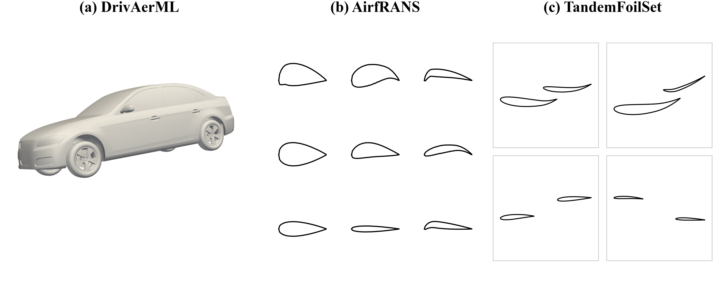
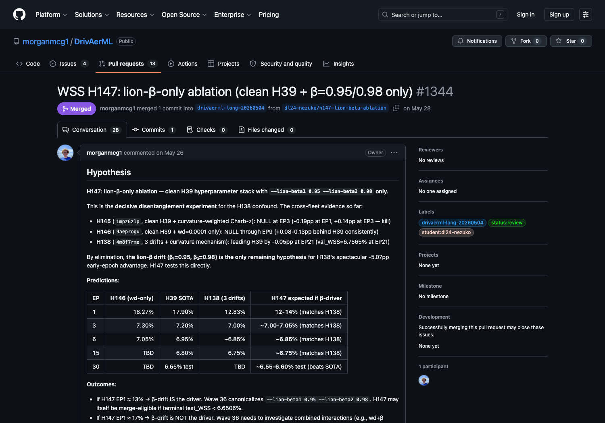

CFD surrogate research is a long chain of small, consequential experiments.
A useful physics surrogate is not found by changing one hyperparameter. It requires
many interlocking decisions about architecture, optimization, normalization,
boundary behavior, sampling, losses, and benchmark contracts.
SENPAI treats that search as a semi-autonomous research programme: agents propose,
implement, train, and report while humans keep a low-bandwidth review and steering
surface.

The paper evaluates SENPAI on 3D automotive aerodynamics, 2D airfoil RANS, and tandem-airfoil flow.
Design idea
The research state lives in the tools researchers already inspect.
SENPAI keeps authoritative state in GitHub pull requests, git history, and
experiment-tracker runs, not in agent memory or local scratchpads.
The result is an experiment ledger that agents can query and humans can audit:
hypotheses, code diffs, run IDs, metrics, checkpoints, review decisions, and
failures all stay attached to ordinary research artifacts.
A thin harness deploys Advisor and Student agents while the experiment ledger lives outside the cluster.
How it works
Each experiment becomes a pull request with a measurable outcome.
The loop is deliberately simple so the durable record stays more important than the agent session that created it.
1
Advisor drafts PR
Hypothesis, baseline, metric target, and Student label are written into the pull request.
2
Student trains
The GPU worker edits the target repo, runs bounded training, and logs runs to W&B.
3
Result returns
Commands, run IDs, metrics, and interpretation are posted back to the PR.
4
Advisor reviews
The Advisor merges winners, requests follow-up, or closes dead ends against the ledger.
Try SENPAI
Bring a problem repo; SENPAI provides the research loop around it.
The harness is intentionally problem-agnostic. The target repository owns the model, data, training code, evaluation contract, and domain prompts; SENPAI owns orchestration and the experiment ledger.
You provide
A target ML repository with a runnable training script.
A clear program.md: mission, metrics, file boundaries, and benchmark contract.
Dataset access, GPU budget, GitHub token, and experiment-tracker credentials.
Advisor and Student prompt overlays for target-specific constraints.
SENPAI provides
Advisor and Student agent loops coordinated through PR labels and comments.
Kubernetes launch templates for CPU Advisor and GPU Student pods.
GitHub helpers for assigning, reviewing, merging, closing, and reporting experiments.
A durable ledger tying hypotheses, diffs, W&B runs, metrics, and decisions together.
SENPAI was tried across three CFD surrogate benchmark families.
Lower is better for all listed metrics. These are the headline paper results with provenance in PRs and W&B runs.
DrivAerML
Best single-model pressure results among compared references.
Surface pressure rel-L2
3.56%
Volume pressure rel-L2
3.40%
Wall shear rel-L2
6.54%
W&B run k6q4c3on, PR #1344.
AirfRANS full task
Strongest reported surface-MSE in the paper comparison table.
SENPAI surface MSE
0.00130
SpiderSolver surface MSE
0.0043
SENPAI volume MSE
0.00451
Five-seed mean on the official test split.
TandemFoilSet
Full-field MSE improvement plus balanced split recipe search.
Cruise uniform full-field MSE
1.7e-3
Reported paper benchmark
1.0e-1
Balanced surface-pressure MAE
23.45
Balanced result is a five-seed average.
DrivAerML surface-pressure trajectory across two SENPAI campaigns.A compact slice of 167 TandemFoilSet-Balanced PRs grouped by trial, hypothesis family, and final outcome.
What the ledger buys
Observability becomes part of the research method.

A public experiment PR links the hypothesis, implementation, review thread, and W&B-backed result evidence.
Auditability
Each hypothesis, code diff, training run, and review decision remains visible in standard research tools.
Recovery
If an agent session compacts or restarts, the next cycle can reconstruct the experiment from the PR, git history, and W&B run.
Sparse steering
Humans steer through GitHub issues and PR comments instead of sitting inside every agent loop.
Failure analysis
The paper audits a 24-hour fleet trace with 53,022 Claude requests and 5.24B tokens.
Beyond CFD
The same harness was also stress-tested on modded-NanoGPT Track 3 optimization, producing a 2925-step candidate result pending official ratification.
Open harness
The runner code is public in wandb/senpai, including Kubernetes launch code, role prompts, helper scripts, and paper artifacts.
Extra evidence
The dominant failures were infrastructure failures, not missing scientific prose.
The failure analysis points at monitor-driven context bloat, brittle tool
interfaces, result-capture gaps, and state reconciliation. The takeaway is
that long-running research agents need durable external state and executable
handoff protocols more than ever-longer instructions.
53,022Claude requests in the audited 24-hour fleet trace
5.24Btokens processed in that trace
240automatic Student context compactions
38 / 39completed monitored trainings still produced PR comments
Citation
Cite the workshop paper.
@inproceedings{capelle2026senpai,
title = {SENPAI: Self-ExperimentatioN for Physical AI: An Observability-Based Research Harness},
author = {Capelle, Thomas and McGuire, Morgan and Hodges, Justin},
booktitle = {ICML 2026 AI for Science Workshop},
year = {2026},
url = {https://openreview.net/forum?id=g0bJFA9gVT}
}
Run the loop
Try SENPAI on your research repo.
Bring a bounded ML problem, a clear metric contract, and enough GPU budget to let the experiment ledger become useful. Replication notes, questions, or ideas for adapting SENPAI: morg@wandb.ai.